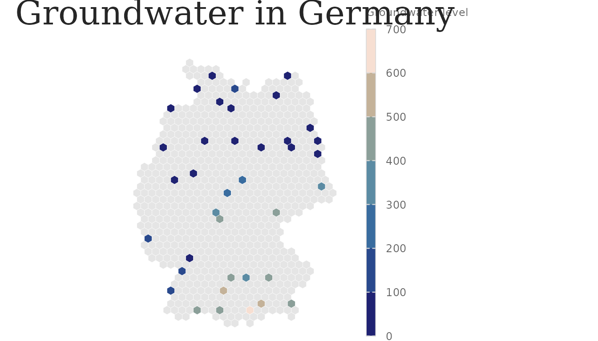
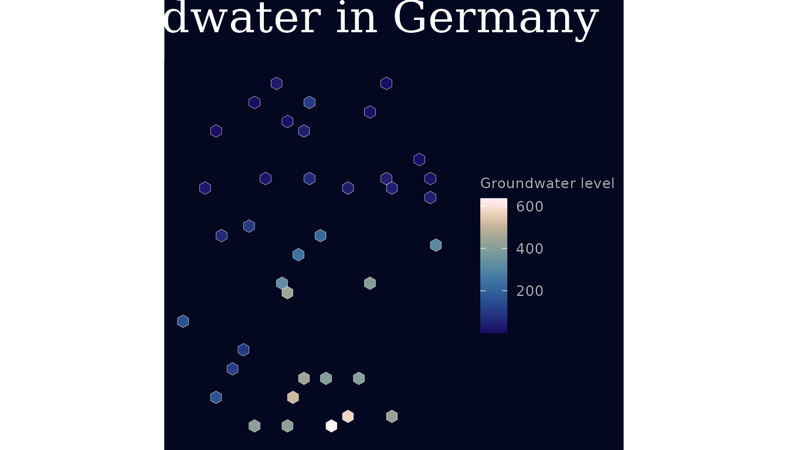
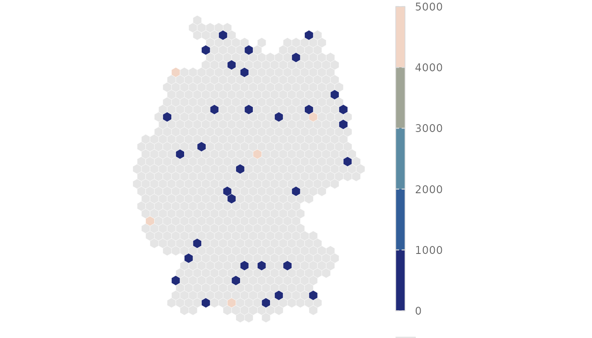

The visual style is one system with a light and a dark variant,
driven by a single set of design tokens. Plot code
reads tokens through lap_tokens() rather than hard-coding
values, so a restyle happens in one place (see
docs/adr/0003).
Tokens
tk <- lap_tokens("light")
str(tk, max.level = 1)
#> List of 7
#> $ variant : chr "light"
#> $ colour :List of 11
#> $ font :List of 6
#> $ size :List of 7
#> $ spacing :List of 3
#> $ effect :List of 3
#> $ lineheight:List of 1
tk$colour$recharge
#> [1] "#506ea7"
tk$colour$discharge
#> [1] "#b38435"Type sizes are multipliers of a base_size, which is how
the same plot scales from web to A0.
Theme and scales
The continuous scale_*_lapidary_c() scales are
binned at pretty round breaks and drawn as a long, thin
colour-steps bar; the legend title is prettified from the mapped
variable (see lap_prettify_label()) unless you set
name/labs(); and lap_na_guide()
adds a “no data” key for NA regions such as empty hexes.
With scale_fill_lapidary_c(range = TRUE) — or
options(lapidary.scale_range = TRUE) — a mapped indicator
column’s theoretical range is appended to the title
("Trend slope (-Inf, Inf)").
data(germany_hex_sample)
p <- ggplot(germany_hex_sample) +
geom_sf(aes(fill = mean_gwl), colour = "white", linewidth = 0.1) +
scale_fill_lapidary_c("magnitude") +
lap_na_guide() +
labs(title = lap_tr("app_title"), fill = lap_tr("groundwater_level"))
p + theme_lapidary("light")
p + theme_lapidary("dark")
A handful of extreme values can flatten the colour range for
everywhere else. robust = TRUE clips the limits to the 2nd
and 98th percentiles (pass a number like 0.95, or
c(0.05, 0.95), to choose them;
options(lapidary.scale_robust = TRUE) sets the default).
Clipped values take the end colour and the binned legend marks that end
with ≤ / ≥:
set.seed(1)
hex_spike <- germany_hex_sample
hex_spike$mean_gwl[sample(which(!is.na(hex_spike$mean_gwl)), 5)] <- 5000
ggplot(hex_spike) +
geom_sf(aes(fill = mean_gwl), colour = "white", linewidth = 0.1) +
scale_fill_lapidary_c("magnitude", robust = TRUE) +
lap_na_guide() +
theme_lapidary("light")
Palette roles decouple intent from the underlying scico palette:
lap_pal_roles()
#> [1] "months" "magnitude" "magnitude_dark" "density"
#> [5] "anomaly"-
months– cyclic, for month-of-year / phase -
magnitude/magnitude_dark– sequential -
density– sequential greys, for counts -
anomaly– divergent, for departures from a reference
Fonts
lap_fonts() registers Oleo Script (titles) and Dosis
(body) and enables showtext. If the fonts or packages are
missing it is a no-op and the theme falls back to serif /
sans, so headless rendering never breaks.
Output presets
lap_preset_names()
#> [1] "web" "web_wide" "a4" "a3" "a2" "a1" "a0"
lap_preset("a1")
#> $width
#> [1] 59.4
#>
#> $height
#> [1] 84.1
#>
#> $units
#> [1] "cm"
#>
#> $dpi
#> [1] 300
#>
#> $base_size
#> [1] 22ggsave_lapidary() applies a preset’s width/height/dpi
and sets showtext’s DPI to match, which is the
difference between crisp and blurry poster text.
ggsave_lapidary(p + theme_lapidary("light", base_size = lap_preset("a1")$base_size),
"groundwater_a1.png",
preset = "a1"
)